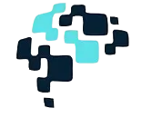
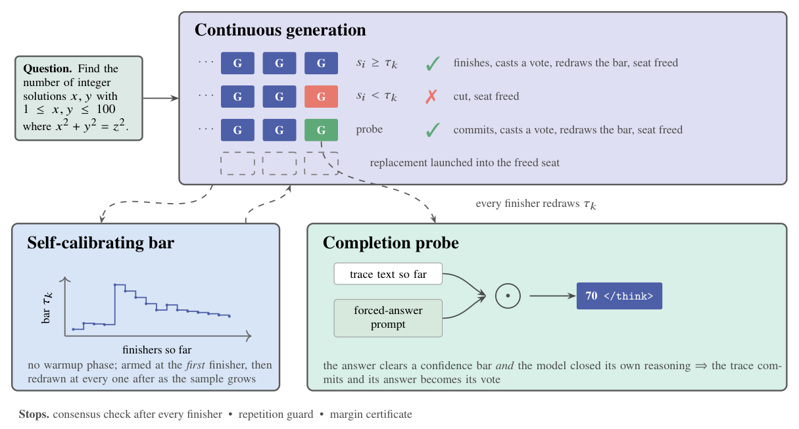
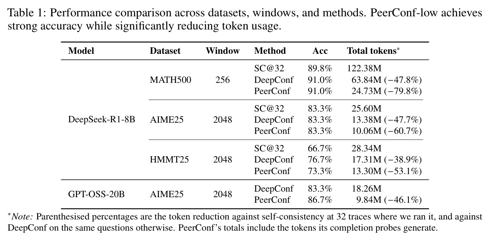
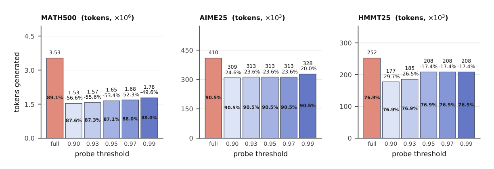
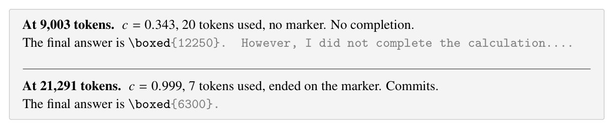
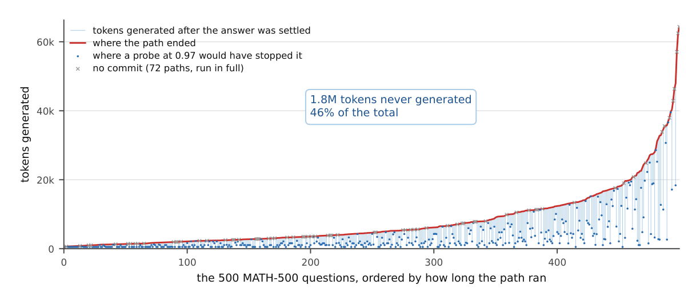
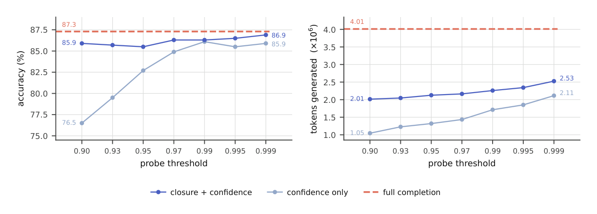

PeerConf: Self-Calibrating Early Stopping for Efficient Parallel LLM Reasoning
1Algoverse AI Research
†Project lead
NeurIPS 2026 · The 6th Workshop on Mathematical Reasoning and AI (MATH-AI) · under review

1Algoverse AI Research
†Project lead
NeurIPS 2026 · The 6th Workshop on Mathematical Reasoning and AI (MATH-AI) · under review

Peer Think with Confidence (PeerConf) is a warm-up-free confidence filter for parallel LLM reasoning. Sampling many reasoning traces and voting improves accuracy, but every trace runs to completion regardless of quality. Confidence-based filtering can stop weak traces early, yet current methods such as DeepConf set their threshold from a dedicated warm-up phase that must finish before any trace can be filtered or a consensus check can run.
PeerConf estimates the same percentile threshold from the traces finishing within the run itself. The threshold arms at the first finisher and is recomputed at every finisher after it. PeerConf also probes running traces for their current answer: a trace whose probe clears a confidence threshold and closes the model's own reasoning commits early, casts that answer as its vote, and frees its seat for a replacement. No warm-up phase and no training: the filter is self-calibrating, armed at the first finisher and redrawn at every one after, so filtering and consensus checks begin immediately.
A run answers one question with at most 32 traces. An opening wave of 16 starts together; every trace that finishes, commits, or is cut frees a seat, and a replacement launches into it until the budget is spent. Consensus is checked at every departure, so a question can end the moment the traces agree.
Every 4,096 tokens a running trace is asked for its answer with a short forced-answer prompt. If the probe ends on the end-of-thinking marker with confidence above the threshold, the trace commits: its answer becomes its vote and generation stops. Requiring closure is what keeps early commitment safe.





@inproceedings{atanda2026peerconf,
title = {PeerConf: Self-Calibrating Early Stopping for Efficient Parallel LLM Reasoning},
author = {Atanda, Mofe and Baguenane, Yani and Yi, Tyler and Filiz, Deniz and Mahfoud, Mohammed and Mujumdar, Anusha},
booktitle = {The 6th Workshop on Mathematical Reasoning and AI at NeurIPS 2026},
year = {2026},
url = {https://github.com/mofe-stack/PeerConf}
}